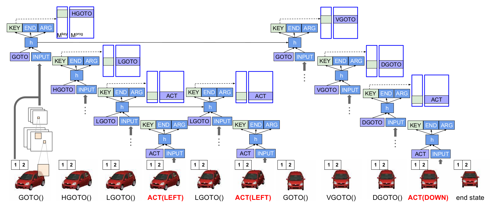
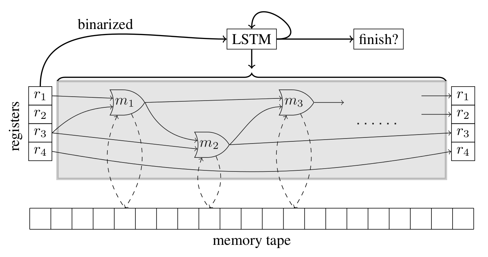
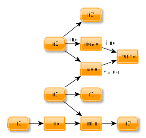

Reading Group #3
Neural Programming
By Hugo Mougard
On January, 4
Overview
- Introduction
- Paper 1: NP
- Paper 2: NPI
- Paper 3: NRAM
- Comparison
- Bibliography
- Conclusion
Introduction
Why Neural Programming?
Many papers submitted to ICLR 2016 are about learning programs
- Very interesting problem
- Very important problem
- Recently in our reach
→ Let's review some of them ♡
Introduction
Neural Programming checklist
Can we:
- add memory to the program without making its training harder?
- have complex operations
- have complex combinations of operations
- generalize to unseen input ranges
Introduction
What about seq2seq?
seq2seq has tight architectural coupling for the different characteristics:
- Memory size (number of hidden units)
- Operation complexity (number of parameters, quadratic in the memory size)
- Combination complexity (depth, arbitrary)
Introduction
seq2seq checklist results
- ✗ add memory w/o making the training harder?
- ✓ have complex operations
- ✗ have complex combinations of the operations
- ✗ generalize to unseen input ranges
→ can't efficiently learn programs.
Introduction
What's the solution?
The Neural Turing Machine decouples those characteristics. We'll have a look at 3 of its successors.
Overview
- Introduction
- Paper 1: NP
- Paper 2: NPI
- Paper 3: NRAM
- Comparison
- Bibliography
- Conclusion
Paper 1: NP
Paper Metadata
- Title
- Neural Programmer: Inducing Latent Programs with Gradient Descent
- Authors
- Arvind Neelakantan¹, Quoc V. Le² & Ilya Sutskever²
- Lab
- University of Massachusetts Amherst¹ & Google Brain²
- Conference
- Under review for ICLR 2016
Paper 1: NP
Task
From a question and a table containing information, produce an answer.
e.g.
- Question
- Who is the president of the U.S.?
- Table
-
President Country F. Hollande France B. Obama United States of America V. Putin Russian Federation - Answer
- B. Obama
Paper 1: NP
Main idea overview
NNs with arithmetic & logic ops and external memory

Paper 1: NP
Implementation

Paper 1: NP
Question rnn

Paper 1: NP
Data selector

Paper 1: NP
Operation selector

Paper 1: NP
History rnn

Paper 1: NP
Training
- On (question, table, answer) triples
- Fully differentiable. Adam optimization
- Some techincal tricks: hard training
Overview
- Introduction
- Paper 1: NP
- Paper 2: NPI
- Paper 3: NRAM
- Comparison
- Bibliography
- Conclusion
Paper 2: NPI
Paper Metadata
- Title
- Neural Programmer-Interpreters
- Authors
- Scott Reed & Nando de Freitas
- Lab
- Google DeepMind
- Conference
- Under review for ICLR 2016
Paper 2: NPI
Main idea overview
- Learn small programs
- Learn to compose small programs into bigger ones with a controller
- Stock programs in memory and re-use them
Paper 2: NPI
Some details 1/2
- A program is an embedding
-
Controller input:
- the program to execute
- its arguments
- input from the environment
-
Controller output:
- key of the next program to execute
- args of the next program
- whether to end the execution or not
Paper 2: NPI
Example
Paper 2: NPI
Some details 2/2

Paper 2: NPI
Training
- On program traces
- Curriculum learning
- If the inference core is learned, it's possible to freeze weights to learn new programs w/o forgetting old ones
Overview
- Introduction
- Paper 1: NP
- Paper 2: NPI
- Paper 3: NRAM
- Comparison
- Bibliography
- Conclusion
Paper 3: NRAM
Paper Metadata
- Title
- Neural Random-Access Machines
- Authors
- Karol Kurach¹, Marcin Andrychowicz¹ & Ilya Sutskever²
- Lab
- Google¹ & Google Brain²
- Conference
- Under review for ICLR 2016
Paper 3: NRAM
Task
Transform a memory tape containing some input data so that it contains the result of executing a given algorithm on the input.
e.g. with sorting
- State of the tape at the start:
-
3 1 2 5 4 - State of the tape at the end:
-
1 2 3 4 5
Paper 3: NRAM
Main idea overview
NNs with arithmetic & logic ops, external memory and registers
Paper 3: NRAM
Use of registers 1/2
| Step | 0 | 1 | 2 | 3 | 4 | 5 | 6 | r1 | r2 | r3 | READ | WRITE |
|---|---|---|---|---|---|---|---|---|---|---|---|---|
| 1 | 4 | 2 | 10 | 6 | 0 | 0 | 0 | 0 | 0 | 0 | [0] | [0]: 4 |
| 2 | 4 | 2 | 10 | 6 | 0 | 0 | 0 | 3 | 0 | 1 | [1] | [4]: 2 |
| 3 | 4 | 2 | 10 | 6 | 2 | 0 | 0 | 3 | 1 | 1 | [1] | [4]: 2 |
| 4 | 4 | 2 | 10 | 6 | 2 | 0 | 0 | 3 | 1 | 2 | [2] | [5]: 10 |
| 5 | 4 | 2 | 10 | 6 | 2 | 10 | 0 | 3 | 2 | 2 | [2] | [5]: 10 |
| 6 | 4 | 2 | 10 | 6 | 2 | 10 | 0 | 3 | 2 | 3 | [3] | [6]: 6 |
| 7 | 4 | 2 | 10 | 6 | 2 | 10 | 6 | 3 | 3 | 3 | [3] | [6]: 6 |
Paper 3: NRAM
Use of registers 2/2
Paper 3: NRAM
Operations 1/2
READZERO(a, b) = 0ONE(a, b) = 1TWO(a, b) = 2INC(a, b) = (a+1) mod MADD(a, b) = (a+b) mod MSUB(a, b) = (a − b) mod M
Paper 3: NRAM
Operations 2/2
DEC(a, b) = (a − 1) mod MLESS-THAN(a, b) = [a < b]LESS-OR-EQUAL-THAN(a, b) = [a ≤ b]EQUALITY-TEST(a, b) = [a = b]MIN(a, b) = min(a, b)MAX(a, b) = max(a, b)WRITE
Paper 3: NRAM
Training
- On input/output pairs only
- Fully differentiable
- Curriculum learning
- Many technical tricks: hard training
Overview
- Introduction
- Paper 1: NP
- Paper 2: NPI
- Paper 3: NRAM
- Comparison
- Bibliography
- Conclusion
Comparison
Some characteristics
| NP | NPI | NRAM | |
|---|---|---|---|
| Simple training examples (not traces) | ✓ | ✗ | ✓ |
| Re-usable programs | ✗ | ✓ | ✗ |
| Neural Programming checklist ok? | ✓ | ✓ | ✓ |
| Curriculum learning | ✗ | ✓ | ✓ |
| My favorite | ✗ | ♡ | ✗ |
Overview
- Introduction
- Paper 1: NP
- Paper 2: NPI
- Paper 3: NRAM
- Comparison
- Bibliography
- Conclusion
Bibliography
Previous Work
Bibliography
Studied Papers
Overview
- Introduction
- Paper 1: NP
- Paper 2: NPI
- Paper 3: NRAM
- Comparison
- Bibliography
- Conclusion
Conclusion
- Very interesting papers, ICLR is going to be great!
- NPI is onto something with its hierarchical, re-usable programs
- It's only getting started!